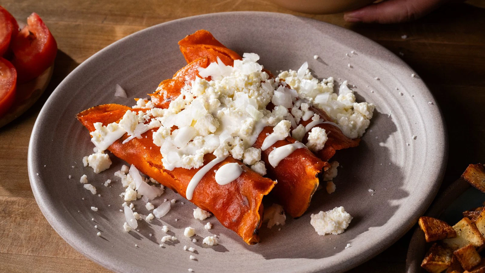

Enchiladas
Take Me Back Home

Ingredients for Salsa Roja
- Fried Red Chiles
- Tomatoes
- Garlic
- Onion
- Chicken Broth
- Salt
- Optional: Cumin and Dried Oregano
Ingredients for Enchiladas
- Corn Tortillas
- Filling (Shredded Chicken, Cheese, or Beans
- Cooking Oil
Ingredients for Garnish
- Chopped Onioon
- Fresh Cilantro
- Sour Cream
- Crumbled Queso Fresco
Preparation Steps
- Make the Salsa Roja: Toast and rehydrate the dried red chiles, then blend them with tomatoes, garlic, onion,
chicken broth, and seasonings until smooth.
- Prepare the Tortillas: Lightly fry or warm the corn tortillas until they're soft and pliable.
- Assemble the Enchiladas: Dip each tortilla in the salsa, fill with your choice of filling (shredded chicken, cheese, or beans), and roll them up.
- Arrange and Bake: Place the rolled enchiladas seam side down in a baking dish, pour any remaining salsa on top, and bake until heated through.
- Garnish and Serve: Top with chopped onion, cilantro, sour cream, or queso fresco if desired.